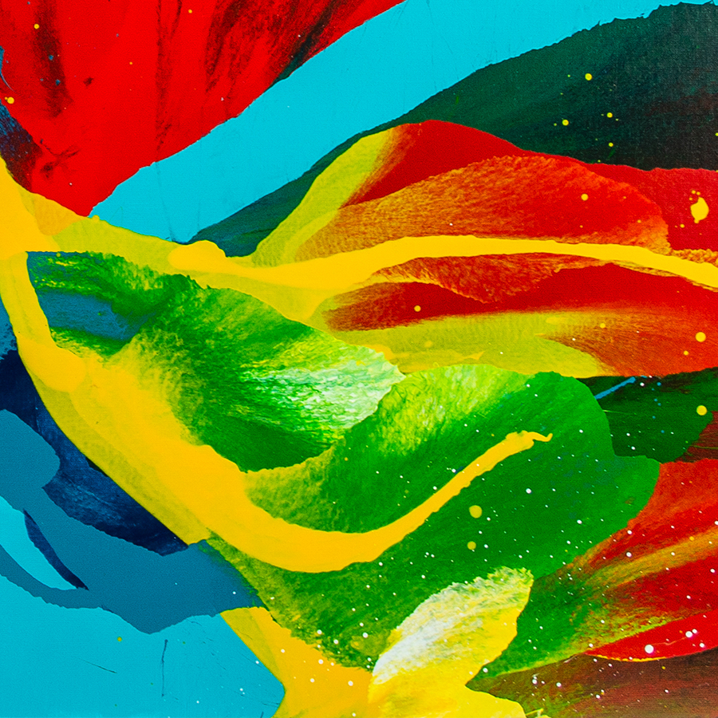

Paint folding
Working with a fluid paint is a challenge in it-self.
Hellen Frankenthaler’s was this amazing women who started working with fluid oil paint. Her works intrigued with a watercolour-like touch. “Off White Square” I think is my favourite work of hers. It’s vivid and delicate at the same time. But many of her works were delicate precisely because she was using fluid paint. She had to dilute the paint in order to be able to work with fluid paint. Today we can work with different mediums that can help to liquefy the paint without thinning it and loosing pigment.
But adding air to it… well expect unexpected.
The challenge remains. When using different mediums the paint is appearing as a different shade. You need to remember what shade it will become after the paint will dry. When the liquids mix together and will give you a new colour, it’s shade will also be different when dry. But when working with air the biggest challenge is how to control the fluid and the blows of air. And planning ahead is important.
If you’d be watching me from a far just before I start a painting you would see somebody who is walking around the canvas and like conductor or a dancer is swaying hands in different directions with changing rhythm - so to polish standard - a lunatic. But this is a moment I am doing a mental exercise. I am imagining not only the paint I will pour on the canvas but also the directions it will be blown and the movement I need to do in order to fold the paint.
Folding paint
So how do you fold a paint? And can you even fold something that is a liquid and is laying on a flat surface?
At many of my paintings I am using the force to push the paint across the canvases and to push it out. And on all of my paintings you are able to see this movement. But while working on “Look inside” painting, I discovered that I can also fold it. What do I mean? Well the paint is rapidly changing direction creating a new layer of paint without destroying the layer beneath, creating this sort of paper folding effect.
This also a way to have control over the paint and being able to create central composition that is entirely closed within the canvas.